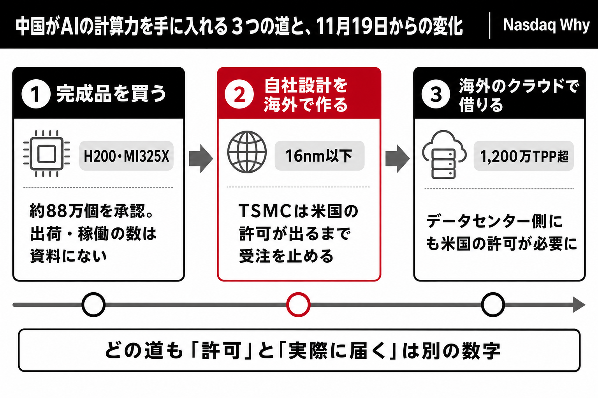
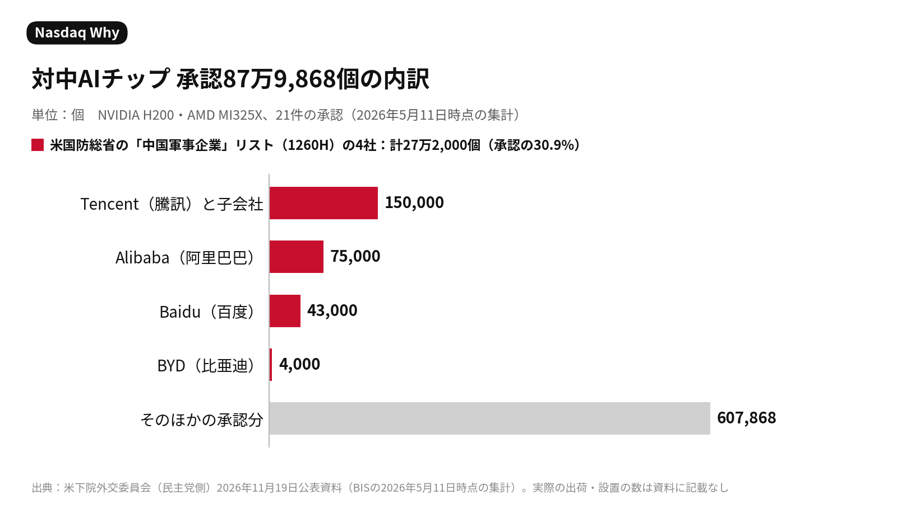

ニュースの深掘り
中国向けAIチップ、約88万個の輸出を承認――「許可」が出ても、なぜ届くとは限らないのか？
米下院外交委員会の民主党側が11月19日に公表した資料で、米商務省が中国企業向けのNVIDIA「H200」とAMD「MI325X」について、2026年5月11日までに約88万個分を承認していたことが分かりました。同じ日には、中国企業が自分で設計したチップを海外の工場で作る道や、海外のデータセンターで計算力を借りる道を狭める新しい規則も始まりました。「許可」の数字と、実際に届く数字はなぜ違うのか。一次資料で整理します。

承認は申請の約4分の1
資料によると、米商務省産業安全保障局（BIS）が2026年5月11日時点でまとめた数字で、中国企業向けのH200とMI325Xの申請は344万4,160個分でした。このうち21件、87万9,868個分が承認されています。申請の約26%です。
対象には、米国からの輸出だけでなく、第三国からの再輸出や、同じ国の中での移転も含まれます。
ただし、この集計は完全ではありません。資料は、NVIDIAが2025年12月19日に申請したTencent（騰訊）向けのH200 44万5,000個分など、十分に反映されていない申請があると書いています。
承認の約3割は「中国軍事企業」リストの会社向け
承認分には、米国防総省が2026年6月の「1260Hリスト」で中国軍事企業とした会社向けが含まれます。Tencent（騰訊）と子会社が15万個、Alibaba（阿里巴巴）が7万5,000個、Baidu（百度）が4万3,000個、BYD（比亜迪）が4,000個です。
4社の合計は27万2,000個で、承認数量の30.9%にあたります。Alibaba（阿里巴巴）は94万8,950個分を申請し、承認されたのは約8%でした。
資料によると、NVIDIAとAMDはどの申請でも、別の相手に横流しされる危険は「低い」と説明していました。

資料に書かれていないこと
この資料から分かるのは「許可した数」までです。実際に何個が出荷され、どこに置かれ、どれだけ動いているのかは書かれていません。審査中の申請がどうなったかも分かりません。
承認の数字を、そのまま中国に届いたAIチップの数と読まないことが大切です。
同じ日に始まった新ルール：自社設計のチップを海外で作る道
BISが11月16日に発表し、19日に始まった暫定の規則は、製造を請け負う会社（ファウンドリー）や後工程の会社にも関わります。米国が認めた設計会社のリストに入っていない会社が設計した先端のチップは、規制の対象とみなされます。中国など一部の国に本社がある設計会社は、この扱いを覆す手続きが使えなくなりました。
Reutersによると、TSMCは影響を受ける顧客について、16ナノメートル以下の一部の受注を、米国の許可が出るまで止めるよう指示しました。HBMや先端のパッケージを使わない場合は、28ナノメートルや40ナノメートルの製造を案内したとされます。Financial Timesは、TSMCとSamsung（サムスン電子）が一部の中国の顧客への出荷を止めたと報じました。
先端のAIチップの多くは7ナノメートル以下で作られます。古い製造に切り替えると、設計のやり直しや、性能・電力効率の低下が避けにくくなります。「代わりの工場の枠を取れるか」と「必要な性能が出るか」は、別々に見る必要があります。
海外のデータセンターで借りる道にも許可が必要に
同じ規則は、中国など（米国の分類で「D:5」の国やマカオ）に本社がある会社に、合計で1,200万TPPを超える計算力を提供する世界中のデータセンターについて、先端チップを送るときに許可を求めます。TPPはチップの計算性能を表す米国の規制の物差しです。
すでにサービスを提供している会社には、許可を取るまで90日の猶予があります。規則への意見の受け付けは2027年1月19日までです。
3つの道と、次に見るもの
今回の動きは、中国がAIの計算力を手に入れる3つの道すべてに及びます。
- 完成品を買う：約88万個の承認は出ているが、出荷・設置・稼働の数はまだ見えない
- 自社設計を海外で作る：16ナノメートル以下は米国の許可待ち。許可が出るか、古い製造に移るか
- 海外のクラウドで借りる：データセンター側の許可の取得状況（90日の猶予の後）
- 次に見るもの：審査中の申請（Tencent向け44万5,000個など）の結果、TSMC・Samsungの受注再開、NVIDIA・AMDの決算での中国向け売上
NasdaqWhyでは、ニュースの「なぜ？」を一次資料の数字で深掘りしていきます。
出典
- 米下院外交委員会（民主党側）：ECRA Information Disclosure 概要（2026年11月19日）
- 米連邦官報：Addressing Remote Access to Advanced Semiconductors（BIS、2026年11月19日）
- Reuters：TSMC tightens China AI chip curbs as new US rules close manufacturing loophole（2026年11月19日）